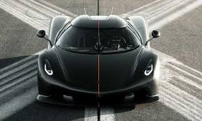
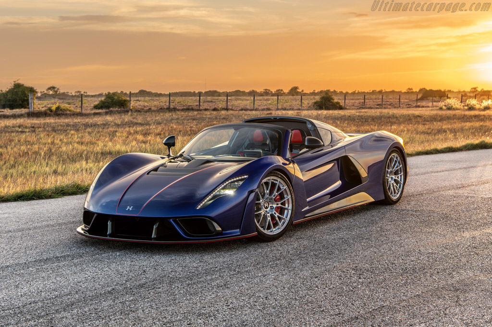
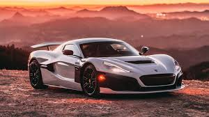
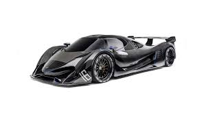
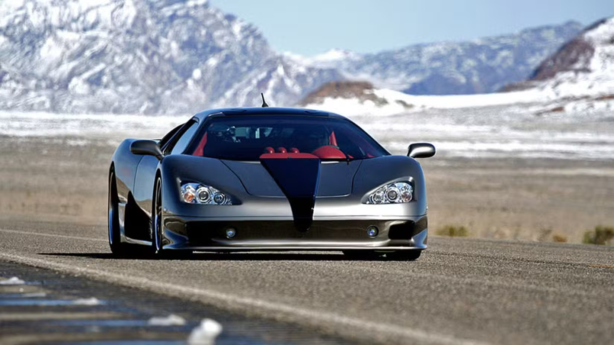
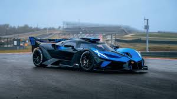

Bugatti Chiron SS 300+
Bugatti Chiron SS 300+
- 1577 lóerő
- 1600 Nm
- 490.484 KM/H
- 3.9 Millió $
Az autóból összesen 30 db példány készült szerte a világon. Egy 8.0-literes Quad-turbós W16 motorral van ellátva.
Bugatti Chiron SS 300+
Az autóból összesen 30 db példány készült szerte a világon. Egy 8.0-literes Quad-turbós W16 motorral van ellátva.

Koenigsegg jesko absolutEz az autó az úgyismert Koenigsegg Jesko végsebességre épült változata. 125 db példányt készítettek.
 SSC Tuatara
SSC Tuatara
Ez egy amerikai gyártású autó, amiből 100 db készült. Egy 5.9-literes twin-turbo V8 hajtja.

Hennessey Venom F5Szintén egy amerikai gyártású autó, összesen 90 db készült belőle. Egy 6.6L Twin-Turbocharged V8 hajtja.

Rimac NeveraEgy horvátországban gyártott elektromos hiperautó. 150 példányt készítettek ebből a járműből.

Devel 16 (prototype)Ez egy prototípus autó, ami elméletben 560-nál több KM/H-val tud menni. Csak sajnos lehetetlen, mivel felkapja a szél.

SSC Ultimate Aero TTEz az autó egy világrekorder volt 2007-ben, a világ leggyorsabb autója a Bugatti Veyron előtt.

Bugatti BolideEz egy teljesen pályára épült autó, amiből 40 db-ot készítettek világszerte. 8.0-literes Quad turbo W16-al van ellátva.